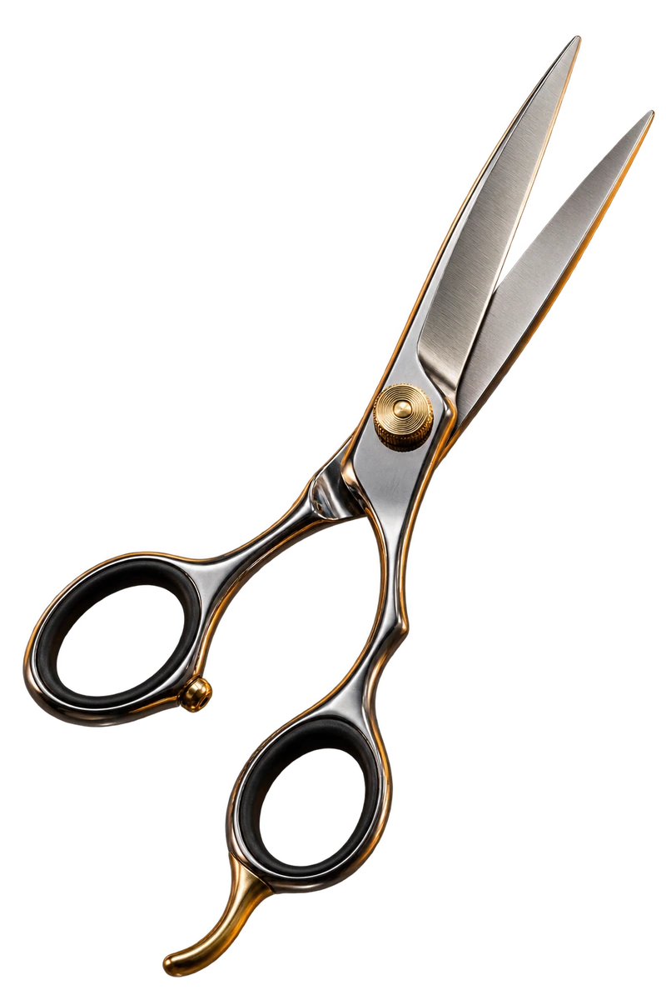
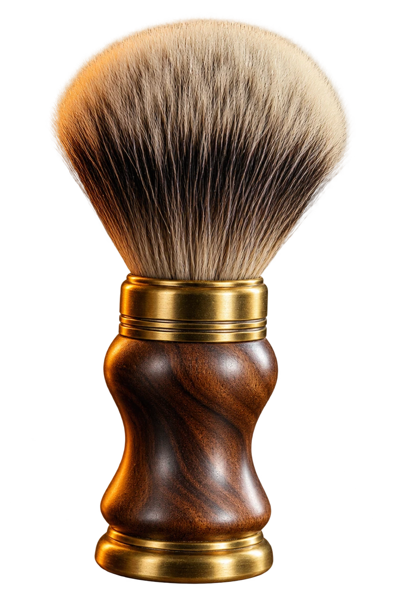
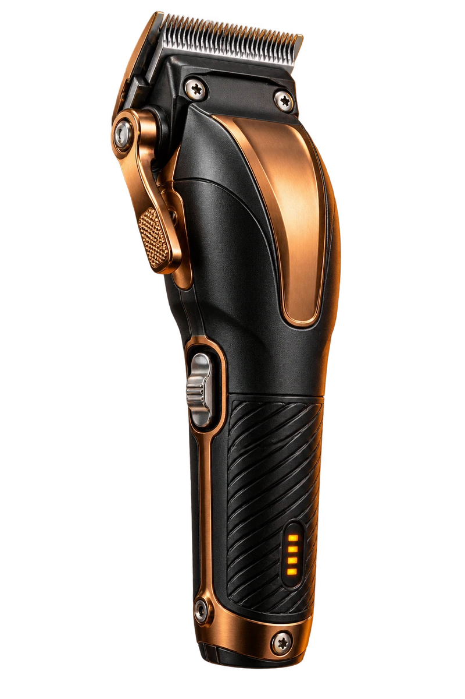
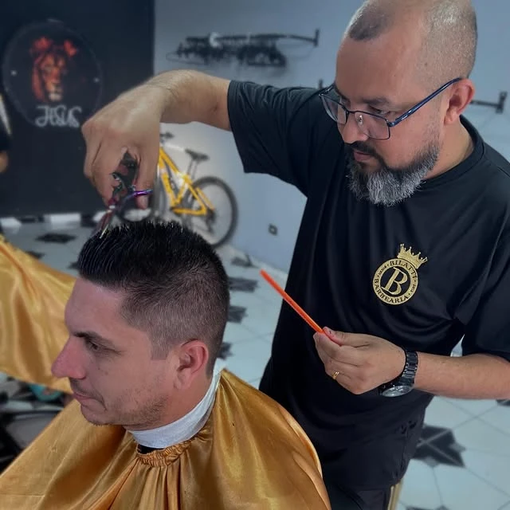

HORTOLÂNDIA · JARDIM AMANDA I · DESDE 2013
BILATTIESTILO & TRADIÇÃO


SEU ESTILO. NOSSA ASSINATURA.
Corte, barba e cuidado nos detalhes.
O seu próximo visual começa na Bilatti.
CUIDADO MASCULINO, DO SEU JEITO
NOSSOS SERVIÇOS
Do clássico a uma nova ideia.
Escolha seu interesse e converse com a equipe.
O CAPRICHO COMEÇA AQUI
FERRAMENTAS DO OFÍCIO

01 / 03
TESOURA · PRECISÃO NO ACABAMENTO
Aço polido, ajuste de tensão e anéis ergonômicos.
A técnica está nas mãos. A atenção, em cada detalhe.
TRABALHOS REAIS, PUBLICADOS PELA BILATTI
GALERIA DE ESTILO
Cortes e detalhes publicados pela Bilatti.
Encontre a inspiração para a sua próxima visita.

O OFÍCIO ESTÁ NOS DETALHES.03 / A NOSSA CASA
MAIS DO QUE
UM CORTE.
UMA BOA EXPERIÊNCIA.
A Bilatti tem um compromisso simples: cuidar do seu visual com atenção e capricho. É ouvir sua ideia, trabalhar os detalhes e fazer da sua passagem pela cadeira um momento que vale a pena.
No Jardim Amanda I, em Hortolândia. Desde 2013.
UM TEMPO PARA VOCÊ
TÁ NA HORA
DE RENOVAR?
Escolha o serviço e converse com a equipe.
Seu próximo visual começa com uma mensagem.
04 / CHEGA MAIS
SUA BARBEARIA
NO AMANDA I.
Rua Almada Negreiros, 1780Jardim Amanda I · Hortolândia, SP
CEP 13188-010Traçar rota no Google Maps
Horário divulgado no Instagram.
Consulte a equipe para feriados e outros dias.
Como faço para agendar?
Toque em “Agendar horário”, escolha seu interesse e abra a conversa no WhatsApp ou no Instagram. O horário só fica reservado depois da confirmação da equipe.
Onde consulto os preços?
Converse diretamente com a equipe sobre o serviço desejado para consultar os valores e as condições atuais.
Posso levar uma foto de referência?
Leve sua ideia e converse com o barbeiro sobre o resultado que você procura. Para modelos de tranças ou detalhes específicos, consulte antes a disponibilidade.
Vocês têm planos mensais?
A Bilatti já divulgou planos mensais nas redes. Pergunte à equipe quais opções estão disponíveis hoje e quais são as condições.